38、Thermodynamic anatomy of micelle-small molecule coacervation
Fengxiang Zhou, Minyue Lu, Lingxiang Jiang*
Soft Matter, 2025, 21: 5067-5079.
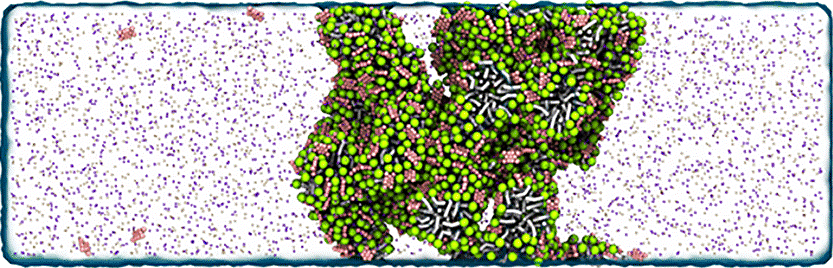
37、 Boosting Reaction Kinetics with Viscous Nanowire Dispersions
Jurong Dong, Hongkun Cao, Zhiwei Yang, Zongze Zhang, Zhijie Yang*, Lingxiang Jiang*, Jingjing Wei*
J. Am. Chem. Soc., 2025, 147(17): 14614-14624.
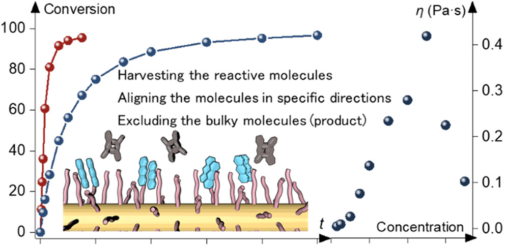
Da Tang, Jun Zhu, Hao Wang, Nannan Chen, Hui Wang, Yongqi Huang, Lingxiang Jiang*
Nat. Chem., 2025, 17: 911-923.
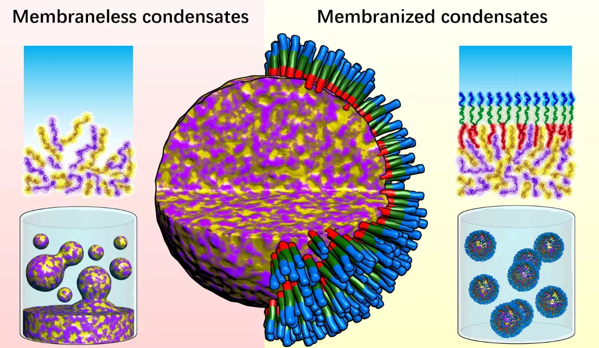
35、Coacervate-pore complexes for selective molecular transport and dynamic reconfiguration
Hao Wang, Hui Zhuang, Wenjing Tang, Jun Zhu, Wei Zhu*, Lingxiang Jiang*
Nat. Commun., 2024, 15: 10069.

Xuanyu Zhang#, Xiaobin Dai#, Md Ahsan Habib#, Lijuan Gao, Wenlong Chen, Wenjie Wei, Zhongqiu Tang, Xianyu Qi, Xiangjun Gong*, Lingxiang Jiang*, Li-Tang Yan*
Nat. Commun., 2024, 15: 525.
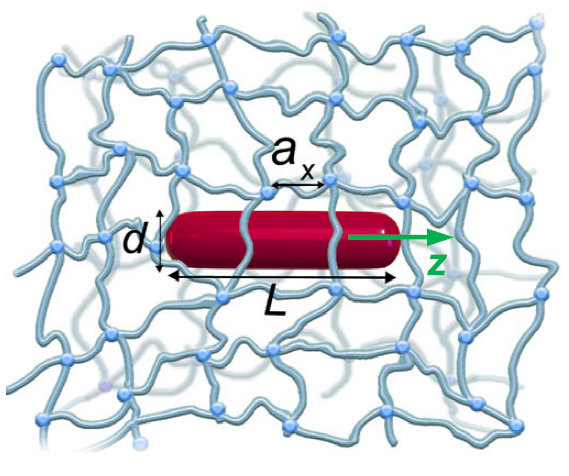
Bala Ismail Adamu*, Mukhtar Lawan Adam, Shafia Mukhtar Ibrahim, Adamu Ismail Adamu, Md Ahsan Habib, Xiao Yu, Shuqin Zheng, Mokhotjwa Simon Dhlamini*, Peipei Chen*, Hanfu Wang*, Lingxiang Jiang*, Weiguo Chu*
ACS Applied Nano Materials, 2024, 7(11): 13206-13218.
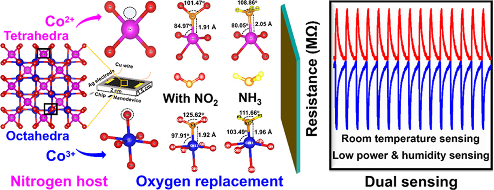
32、Structural Phase Separation of Membranes and Fibers
Weiwei Xu, Hui Zhuang, Sheng Lei, Mei Tu, Lingxiang Jiang*
ACS Nano, 2024, 18(26): 17314-17325.
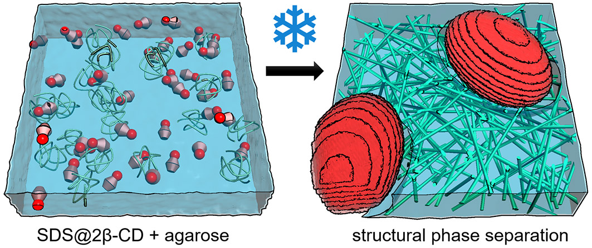
Yangkun Huang#, Jinpeng Huang#, Wenxiang Yin, Fei Xie, Benjamin Coleman, Yaoyu Cao, Satoshi Aya, Wei Zhu, Zhiie Yang*, Lingxiang Jiang*
ACS Nano, 2023, 17(7): 6234-6246.
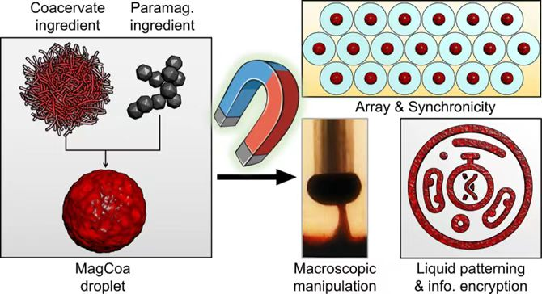
30、Endoskeletal coacervates with mobile-immobile duality for long-term utility
Wannan Chen#, Shuqin Zheng#, Fengxiang Zhou, Yangkun Huang, MeiTu*, Lingxiang Jiang*
Chem. Eng. J, 2023, 462: 142165.
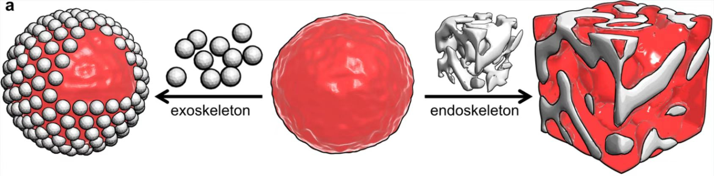
29、Visualization of single crosslinks and heterogeneity in polymer networks
Zhongqiu Tang, Lingxiang Jiang*
Giant, 2022, 12: 100131.
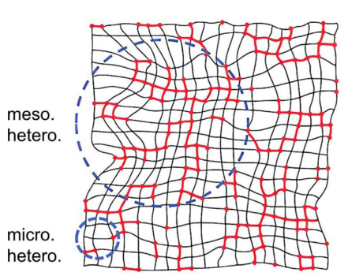
28、Optothermally Programmable Liquids with Spatiotemporal Precision and Functional Complexity
Xixi Chen#, Tianli Wu#, Danmin Huang#, Jiajia Zhou, Fengxiang Zhou, Mei Tu, Yao Zhang, Baojun Li, Yuchao Li*, Lingxiang Jiang*
Adv. Mater., 2022, 12: 100131.

27、Liquid-Liquid Phase Separation Bridges Physics, Chemistry, and Biology
Jun Zhu, Lingxiang Jiang*
Langmuir, 2022, 38(30): 9043-9049.
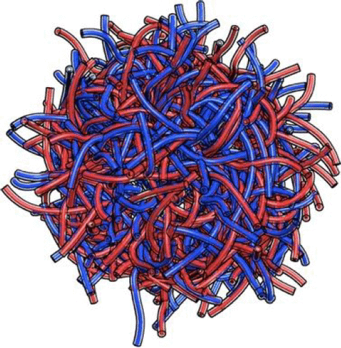
26、Dynamics of a colloid-in-tube host-guest system
Danmin Huang#, Yangkun Huang#, Shuqin Zheng, Mei Tu*, Lingxiang Jiang*
Soft Matter, 2022, 18(26): 4881-4886.
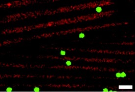
25、 Astral hydrogels mimic tissue mechanics by aster-aster interpenetration
Qingqiao Xie, Yuandi Zhuang, Gaojun Ye, Tiankuo Wang, Yi Cao, Lingxiang Jiang*
Nat. Commun., 2021, 12(1): 4277.
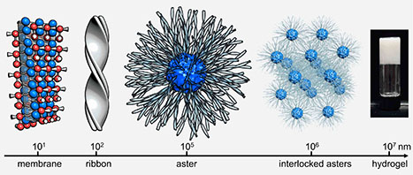
24、A transient high-energy surface powered by a chemical fuel
Yuandi Zhuang, Fengxiang Zhou, Gaojun Ye, Mei Tu*, Lingxiang Jiang*
Mater. Chem. Front., 2021, 5(14): 5390-5399.
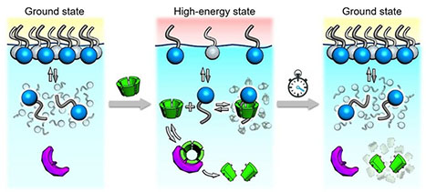
23、Biomimetic self-assembly of subcellular structures
Shuying Yang, Lingxiang Jiang*
Chem. Commun., 2020, 56(60): 8342-8354.
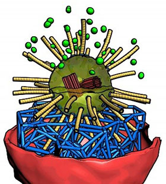
Lingxiang Jiang*, Qingqiao Xie, Boyce Tsang, Steve Granick*
Nat. Commun., 2019, 10(1): 3314.
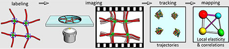
21、Synthetic asters as elastic and radial skeletons
Qingqiao Xie, Xixi Chen, Tianli Wu, Tiankuo Wang, Yi Cao, Steve Granick, Yuchao Li*, Lingxiang Jiang*
Nat. Commun., 2019, 10(1): 4954.
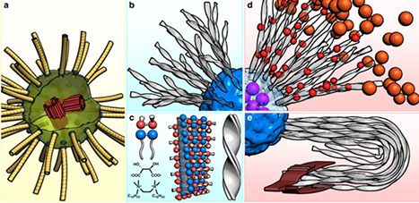
20、Steering Coacervation by a Pair of Broad-Spectrum Regulators
Shenyu Yang, Bo Li, Chunxian Wu, Weiwei Xu, Mei Tu*, Yun Yan, Jianbin Huang, Markus Drechsler, Steve Granick, Lingxiang Jiang*
ACS Nano, 2019, 13(2): 2420-2426.
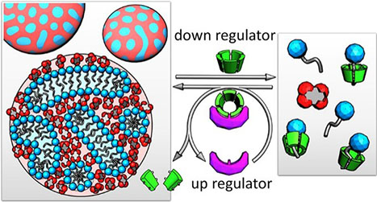
19、Lattice self-assembly of cyclodextrin complexes and beyond
Chunxian Wu, Qingqiao Xie, Weiwei Xu, Mei Tu*, Lingxiang Jiang*
Curr. Opin. Colloid Interface Sci., 2019, 39: 76-85.
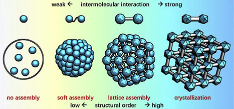
18、Diffusive Adhesives for Water-Rich Materials: Strong and Tunable Adhesion Beyond the Interface
Shenyu Yang, Weiwei Xu, Mei Tu, Lingxiang Jiang*
Chem. Eur. J., 2019, 25(34): 8085-8091.
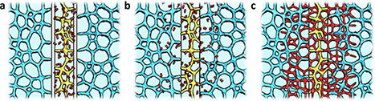
17、Giant capsids from lattice self-assembly of cyclodextrin complexes
Shenyu Yang, Yun Yan, Jianbin Huang, Andrei V. Petukhov, Loes M. J. Kroon-Batenburg, Markus Drechsler, Chengcheng Zhou, Mei Tu, Steve Granick, Lingxiang Jiang*
Nat. Commun., 2017, 8(1): 15856.
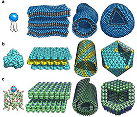
16、Vector assembly of colloids on monolayer substrates
Lingxiang Jiang* , Shenyu Yang, Boyce Tsang, Mei Tu, Steve Granick*
Nat. Commun., 2017, 8(1): 15778.
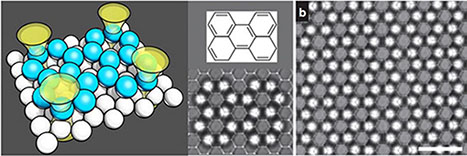
15、Dynamic cross-correlations between entangled biofilaments as they diffuse
Boyce Tsang#, Zachary E Dell#, Lingxiang Jiang# , Kenneth S Schweizer, Steve Granick*
PNAS, 2017, 114(13): 3322-3327.
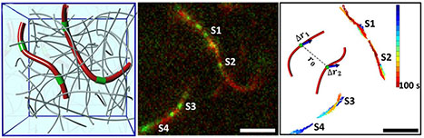
14、Real-Space, in Situ Maps of Hydrogel Pores
Lingxiang Jiang, Steve Granick*
ACS Nano, 2017, 11(1): 204-212.
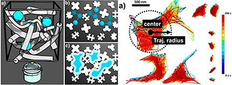
13、Helical Colloidal Sphere Structures through Thermo-Reversible Co-Assembly with Molecular Microtubes
Lingxiang Jiang, Julius W. J. de Folter, Jianbin Huang*, Albert P. Philipse, Willem K. Kegel, andAndrei V. Petukhov*
Angew. Chem., 2013, 125(12): 3448-3452.
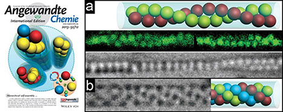
Before 2015
Limin Xu, Lingxiang Jiang, Markus Drechsler, Yu Sun, Zhirong Liu, Jianbin Huang*, Ben Zhong Tang*, Zhibo Li, Martien A. Cohen Stuart, Yun Yan*
J. Am. Chem. Soc., 2014, 136(5): 1942-1947.
Lingxiang Jiang, Jian Bin Huang*, Alireza Bahramian, Pei Xun Li, Robert K. Thomas*, Jeffrey Penfold
Langmuir, 2012, 28(1): 327-338.
10、Enzyme-triggered model self-assembly in surfactant-cyclodextrin systems
Lingxiang Jiang, Yun Yan, Markus Drechsler, Jianbin Huang*
Chem. Commun., 2012, 48(59): 7347-7349.
9、Zwitterionic surfactant/cyclodextrin hydrogel: microtubes and multiple responses
Lingxiang Jiang, Yun Yan, Jianbin Huang*
Soft Matter, 2011, 7(21): 10417-10423.
8、Aqueous self-assembly of SDS@2β-CD complexes: lamellae and vesicles
Lingxiang Jiang, Yu Peng, Yun Yan, Jianbin Huang*
Soft Matter, 2011, 7(5): 1726-1731.
7、Versatility of cyclodextrins in self-assembly systems of amphiphiles
Lingxiang Jiang, YunYan, JianbinHuang*
Adv. Colloid Interface Sci., 2011, 169(1): 13-25.
6、Unveil the potential function of CD in surfactant systems
Yun Yan*, Lingxiang Jiang, JianbinHuang*
Phys. Chem. Chem. Phys., 2011, 13(20): 9074-9082.
Lingxiang Jiang, Yun Yan, Jianbin Huang*, Caifang Yu, Changwen Jin, Manli Deng, Yilin Wang*
J. Phys. Chem. B, 2010, 114(6): 2165-2174.
4、“Annular Ring” microtubes formed by SDS@2β-CD complexes in aqueous solution
Lingxiang Jiang, Yu Peng, Yun Yan, Manli Deng, Yilin Wang, Jianbin Huang*
Soft Matter, 2010, 6(8): 1731-1736.
Lingxiang Jiang, Ke Wang, Fuyou Ke, Dehai Liang, Jianbin Huang*
Soft Matter, 2009, 5(3): 599-606.
Lingxiang Jiang, Manli Deng, Yilin Wang*, Dehai Liang, Yun Yan, and Jianbin Huang*
J. Phys. Chem. B, 2009, 113(21): 7498-7504.
Lingxiang Jiang, Ke Wang, Manli Deng, Yilin Wang, Jianbin Huang*
Langmuir, 2008, 24(9): 4600-4606.